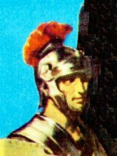
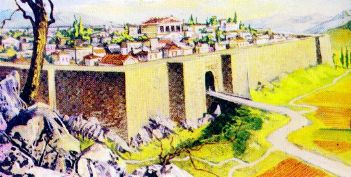
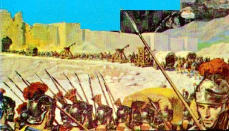

Era um jovem com 26 anos de idade, de
estrutura física bem apresentável, musculosa e medindo 
Gostava de falar de sua terra natal, principalmente de recordar os 18 anos de vida que lá passara no meio das paisagens bucólicas e onde despontou como um terrível garoto "peralta", que não escolhia dia e nem hora para "aprontar uma travessura".
Na sua cidade as chuvas eram raras! Tinha um verão agradável com temperatura em torno de 22 graus centígrados e praticamente sem nenhum dia com chuva. Contudo, ocorriam também dias incômodos quando soprava o "vento siroco", que é uma massa de ar quente vinda da África do Norte, distante geograficamente em linha reta apenas 150 quilômetros da ilha. E por estar tão perto , naquelas ocasiões, o vento transportava uma poeira microscópica que envolvia toda a cidade por dois ou três dias, paralisando quase todas as atividades. As ruas ficavam praticamente desertas e cobertas com uma camada fina de areia.
Todavia, em suas lembranças não podia se esquecer dos famosos vinhos da Sicília e especialmente, do delicioso vinho fabricado pelo senhor Francesco, um vizinho bastante trabalhador, mas muito sovina. Apesar de ter sido companheiro de infância de seus pais, o relacionamento entre eles se limitava a um "seco" bom dia, boa-tarde ou boa-noite "com a cara fechada". Vendia o seu produto a peso de ouro, pois estava ciente da excelente qualidade do mesmo, e não fazia agrados a ninguém.
Longino gostava muito de vinho e a propaganda que faziam daquele ali, cada vez mais o deixava com "água na boca".
Como o dinheiro nunca sobrava, começou a considerar com muita seriedade a possibilidade de uma "operação matemática", ou seja, "subtrair o precioso vinho do depósito do senhor Francesco e adicioná-lo ao seu esconderijo ou transferi-lo diretamente para o estômago".
E foi com muita sagacidade e imaginação que elaborou um meticuloso plano a fim de surripiar o vizinho. Num daqueles dias nublados pela poeira do vento siroco, armou sua genial escaramuça, entrando no depósito principal e apanhando três garrafas do famoso vinho sem que ninguém o visse. E ao regressar a casa, deixou um bilhete:
"A deusa Juno passou por aqui. Levou seu saboroso vinho para ofertar ao deus guerreiro. Obrigado".
Apesar das peraltices,
Longino era um bom rapaz, ajudava aos pais na lavoura e vendia no 
Em sua terra natal conheceu uma jovem chamada Juliana, filha de um vizinho agricultor, de nome Taglivine. Todavia, os pais da moça, vendo o interesse dele, almejando um futuro melhor para a filha, colocavam as maiores dificuldades e oposições a um eventual enlace matrimonial entre os jovens.
Os encontros eram furtivos. Na maioria das vezes, um cumprimento, um aceno com as mãos, uma troca de olhares apaixonados, sempre de longe, constituíam as manifestações aparentes que marcava a existência da simpatia e do interesse mútuo.
O flerte que alimentavam já durava três anos quando Longino, desejando um futuro melhor e uma posição de destaque em sua pátria, começou a fazer amizades com as autoridades locais. Ele almejava também possuir uma situação financeira sólida e confortável, para realizar os seus objetivos e concretizar os seus ideais. Por isso, foi aconselhado a procurar conhecer os meios a fim de pertencer ao quadro dos centuriões romanos.
Contudo, era muito difícil fazer parte da elite dos soldados de Roma. Além dos requisitos e das boas qualidades pessoais que o candidato deveria possuir, dependia também de sua descendência e primordialmente, de um poderoso pistolão.
Mas o impossível, começou a se tornar realidade. Por um amigo de seu pai, que morava em Messina, conheceu o senador Catão, que se interessou por ele e lhe prometeu conseguir o desejado ingresso na famosa Legião dos Centuriões.
Os meses passaram...
Certo dia chegou à boa notícia. Longino 
Lá, depois das apresentações e dos encaminhamentos, conseguiu finalmente ser inscrito na unidade militar. Agora iria depender exclusivamente dele, de sua boa vontade e aplicação, de sua conduta e seu interesse no desempenho das funções. Por isso desdobrou-se intensamente em todos os trabalhos, aplicando-se com dedicação e empenho, porque colocou na mente um objetivo definido, de mostrar-se competente e útil, a fim de angariar a simpatia dos superiores e a admiração dos companheiros de arma, adquirindo uma natural posição de realce na Legião.
E foi com muito esforço e sacrifícios que conseguiu participar de várias campanhas militares, lutando ao lado de bravos e famosos soldados romanos.
Depois de permanecer durante sete anos nos campos de batalha, o seu destacamento militar foi enviado para a Palestina, objetivando manter a ordem em Jerusalém. Toda aquela região, inclusive a Judéia, estava ocupada pelo Império Romano.
De certa forma, era para ele, o começo de uma nova fase em sua vida, pois já ganhava um bom soldo e tinha um posto de comando dentro da guarnição na Judéia. Isto lhe proporcionava um certo destaque e lhe possibilitava sonhar em se casar com a sua inesquecível Juliana Taglivine.
Há cinco anos não visitava os familiares e há mais de seis meses, não tinha notícias de sua cidade. As últimas que chegaram, mal falavam da saúde dos seus pais e do irmão.
Assim, por uma razão muito natural, estava ansioso por voltar à Sicília, reencontrar parentes e amigos, e primordialmente rever aquela que ocupava uma grande dimensão em seu coração.
Esses eram os dias de Longino quando surgiu a missão com os três "malfeitores" no Gólgota, em Jerusalém.